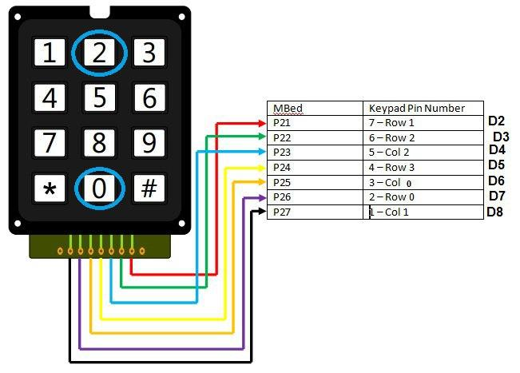
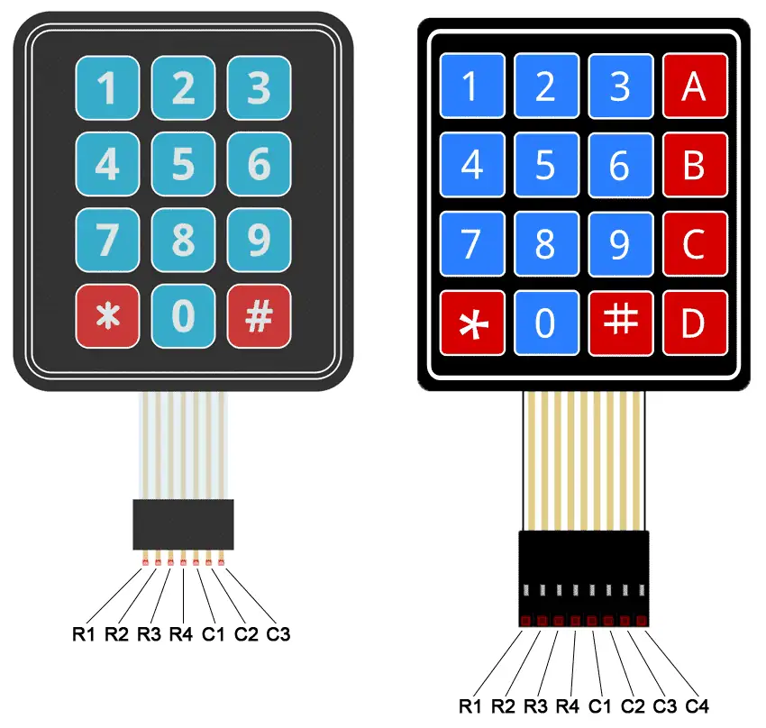
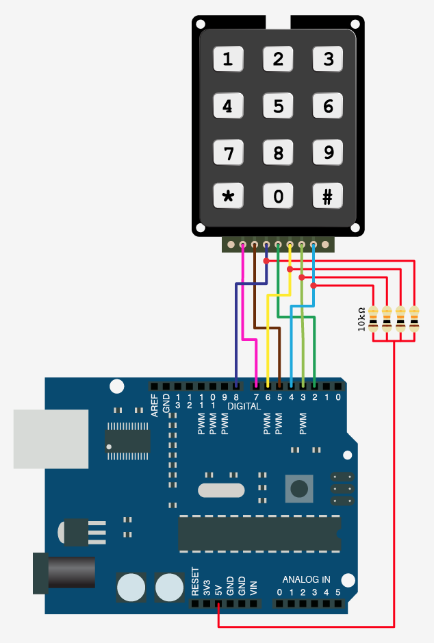
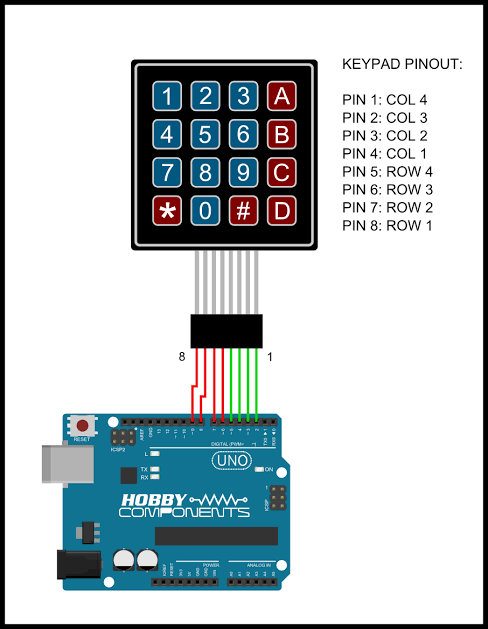

🛠️ دليل الأردوينو العملي: لوحة المفاتيح المصفوفية 3×4 — اثنا عشر زراً بسبعة أرجل فقط!
📌 مقدمة: مرحباً بكم في درس اليوم 🚀
في الدروس السابقة، تعلمنا كيف نقرأ زراً واحداً ونستقبل الأوامر من الكمبيوتر، وكيف نتحكم بالإضاءة والمحركات والحرارة، بل وتحدثنا مع أردوينو آخر عبر السلك!
لكن، هل لاحظتم شيئاً؟ كل مرة استخدمنا فيها زراً، احتاج الزر إلى رجل كاملة في الأردوينو. هذا مقبول لزر أو زرين.. لكن ماذا لو أردنا بناء قفل بكلمة سر يحتاج 12 زراً؟ أو آلة حاسبة؟ سنجد أن الأردوينو أونو (الذي يملك حوالي 12 رجلاً رقمية صالحة) قد نفدت أرجله قبل أن نبدأ!
اليوم سنتعلم حيلة ذكية يستخدمها المهندسون في كل مكان — من كيبورد الكمبيوتر أمامك إلى الصراف الآلي — تسمى المصفوفة (Matrix): سنقرأ 12 زراً باستخدام 7 أرجل فقط!
خطتنا في هذا الدرس ستكون على أربع مراحل:
1. المرحلة الأولى: فهم فكرة "المصفوفة" وكيف نحدد الزر المضغوط من تقاطع صف وعمود.
2. المرحلة الثانية: بناء الماسح (Scanner) بأيدينا مع مقاومات السحب للأسفل — نفس فكرة درس UART.
3. المرحلة الثالثة: الطريقة الاحترافية: مكتبة Keypad والتوصيل المباشر بدون أي مقاومات.
4. المرحلة الرابعة: مشروع ختامي: خزنة سرية بكلمة مرور تُفتح بمحرك السيرفو!
🧰 القطع المطلوبة
| القطعة | العدد | ملاحظة |
|---|---|---|
| Arduino Uno | 1 | |
| لوحة مفاتيح مصفوفية 3×4 | 1 | أي شكل/مصنّع — انظر الشكلين 1 و2 |
| مقاومة 10KΩ | 3 | للسحب للأسفل (المرحلة الثانية فقط) |
| محرك سيرفو | 1 | قفل الخزنة في المشروع الختامي |
| LED أخضر + LED أحمر | 1 + 1 | مؤشر الصحيح/الخطأ |
| مقاومة 220Ω | 2 | للـ LED |
| Breadboard + أسلاك توصيل | - |
🧠 الجزء الأول: ما هي لوحة المفاتيح المصفوفية (Matrix Keypad)؟
تخيل مدينة شوارعها متعامدة: شوارع أفقية تمتد من الشرق للغرب، وشوارع رأسية من الشمال للجنوب. أي بيت في المدينة يمكن تحديد عنوانه بجملة واحدة: "تقاطع الشارع الأفقي الثاني مع الشارع الرأسي الثالث".
لوحة المفاتيح المصفوفية تعمل بنفس الفكرة تماماً! بدلاً من إعطاء كل زر سلكاً خاصاً به، رُتّبت الأزرار على شبكة من الأسلاك المتقاطعة:
C1 C2 C3
| | |
R1 -- [ 1 ] [ 2 ] [ 3 ]
| | |
R2 -- [ 4 ] [ 5 ] [ 6 ]
| | |
R3 -- [ 7 ] [ 8 ] [ 9 ]
| | |
R4 -- [ * ] [ 0 ] [ # ]
كل زر يقع عند تقاطع سلك أفقي (نسميه صف Row) وسلك رأسي (نسميه عمود Column). وهنا السحر: الزر رقم 5 مثلاً ليس إلا مفتاحاً صغيراً يصل داخلياً بين السلك R2 والسلك C2 عندما نضغطه!

الشكل 1: شكل لوحة المفاتيح المصفوفية 3×4 (نموذج من أحد المصنّعين).
الشكل 2: نموذج آخر من مصنّع مختلف — نفس الجزء تماماً من الداخل، مع مخطط ترتيب الأرجل للنوعين 3×4 و 4×4.💡 مفهوم مهم (الحيلة الرياضية): لو وصّلنا كل زر بسلك خاص، لاحتجنا 12 سلكاً لـ 12 زراً. بالمصفوفة نحتاج فقط: 4 صفوف + 3 أعمدة = 7 أرجل فقط! والأكثر إدهاشاً: اللوحة الأكبر 4×4 (بـ 16 زراً!) تحتاج 8 أرجل فقط. كلما كبرت المصفوفة، وفّرنا أكثر — لهذا تستخدمها الكيبوردات ذات 104 أزرار!
أرجل اللوحة:
ستلاحظ أن اللوحة تحتوي على 7 أرجل فقط، ولا يوجد فيها VCC ولا GND! والسبب أنها تحتوي على أزرار فقط، والأزرار لا تحتاج طاقة بل تصل بين سلكين.
| الرجل | الوظيفة |
|---|---|
| R1 | سلك الصف الأول (الأزرار 1، 2، 3) |
| R2 | سلك الصف الثاني (الأزرار 4، 5، 6) |
| R3 | سلك الصف الثالث (الأزرار 7، 8، 9) |
| R4 | سلك الصف الرابع (الأزرار *، 0، #) |
| C1 | سلك العمود الأول (1، 4، 7، *) |
| C2 | سلك العمود الثاني (2، 5، 8، 0) |
| C3 | سلك العمود الثالث (3، 6، 9، #) |
⚠️ ملاحظة مهمة (اختلاف المصنّعين): ترتيب الأرجل يختلف من مصنّع لآخر! في النوع الغشائي (Membrane) الشائع تكون الأرجل 1–4 هي الصفوف R1–R4 ثم الأرجل 5–7 هي الأعمدة C1–C3. راجع دائماً مخطط أرجل لوحتك (مثل الشكل 2). ولو ظهرت الأزرار خاطئة على الشاشة عند التجربة، فالحل سهل جداً: بدّل الترتيب داخل جدولي
rowPinsوcolPinsفي الكود — دون تغيير أي سلك!
💻 الجزء الثاني: نبني الماسح بأيدينا (مع مقاومات السحب للأسفل)
كيف يعرف الأردوينو أي زر ضُغط؟ تذكرون منادي المدرسة الذي يستدعي الطلاب صفاً صفاً؟ سنفعل الشيء نفسه، وتسمى هذه العملية المسح (Scanning):
- نشغّل الصف الأول فقط (R1) ونطفئ بقية الصفوف.
- نقرأ الأعمدة الثلاثة: إن وجدنا عموداً "مفعّلاً"، فقد وجدنا تقاطعاً — عرفنا الصف والعمود، وبالتالي عرفنا الزر!
- ننتقل للصف الثاني ونكرر.. وهكذا.
📌 التوصيل:
نجعل الصفوف مخارج (Outputs) من الأردوينو، والأعمدة مداخل (Inputs). وكل عمود يحتاج مقاومة 10KΩ سحب للأسفل إلى GND — تماماً كما فعلنا مع الزر في درس UART، حتى لا تبقى الرجل "هوائياً وهمياً" يقرأ قيماً عشوائية!
| طرف لوحة المفاتيح | رجل الأردوينو | ملاحظة |
|---|---|---|
| R1 | Pin 2 | مخرج |
| R2 | Pin 3 | مخرج |
| R3 | Pin 4 | مخرج |
| R4 | Pin 5 | مخرج |
| C1 | Pin 6 | مدخل + مقاومة 10KΩ إلى GND |
| C2 | Pin 7 | مدخل + مقاومة 10KΩ إلى GND |
| C3 | Pin 8 | مدخل + مقاومة 10KΩ إلى GND |

الشكل 3: توصيل لوحة المفاتيح مع مقاومات السحب للأسفل (الطريقة اليدوية).📝 الكود:
/*
* مشروع: قارئ لوحة المفاتيح المصفوفية - الطريقة اليدوية
* نمسح الصفوف واحداً تلو الآخر، وعندما نجد عموداً مفعّلاً
* نعرف الزر المضغوط من تقاطع (الصف × العمود)
*/
// أرجل الصفوف الأربعة (مخارج)
int rowPins[4] = {2, 3, 4, 5};
// أرجل الأعمدة الثلاثة (مداخل مع مقاومات سحب للأسفل)
int colPins[3] = {6, 7, 8};
// خريطة الأزرار: كل خانة تقابل تقاطع صف وعمود
char keys[4][3] = {
{'1', '2', '3'}, // الصف الأول
{'4', '5', '6'}, // الصف الثاني
{'7', '8', '9'}, // الصف الثالث
{'*', '0', '#'} // الصف الرابع
};
void setup() {
for (int i = 0; i < 4; i++) {
pinMode(rowPins[i], OUTPUT);
}
for (int i = 0; i < 3; i++) {
pinMode(colPins[i], INPUT);
}
Serial.begin(9600);
Serial.println("جاهز! اضغط أي زر على لوحة المفاتيح:");
}
void loop() {
// نمسح صفاً واحداً في كل مرة
for (int r = 0; r < 4; r++) {
// نشغّل الصف الحالي ونطفئ بقية الصفوف
for (int i = 0; i < 4; i++) {
if (i == r) digitalWrite(rowPins[i], HIGH);
else digitalWrite(rowPins[i], LOW);
}
// نقرأ الأعمدة الثلاثة
for (int c = 0; c < 3; c++) {
if (digitalRead(colPins[c]) == HIGH) {
// وجدنا تقاطعاً! الصف r مع العمود c
Serial.print("تم الضغط على: ");
Serial.println(keys[r][c]);
delay(300); // منع الارتداد (كما في درس UART)
}
}
}
}
🧠 لماذا نضغط زراً واحداً في كل مرة؟ أثناء التعلّم اضغط زراً واحداً فقط: الضغط على زرين في نفس العمود معاً قد يمرّر التيار من صف "مفعّل" إلى صف "مطفأ" فتظهر أزرار "أشباح". المكتبة الاحترافية في الجزء الثالث تتعامل مع هذا بذكاء أكبر.
⚡ الجزء الثالث: الطريقة الاحترافية — مكتبة Keypad بدون مقاومات!
بنينا الماسح بأيدينا لنفهم ما يجري في الخلفية.. لكن المهندسون المحترفون لديهم سر: داخل كل رجل في الأردوينو توجد مقاومة سحب للأعلى (Pull-Up) مخفية يمكن تفعيلها برمجياً بكلمة واحدة: INPUT_PULLUP!
هذا يعني أننا نستطيع إلغاء المقاومات الخارجية الثلاث نهائياً والتوصيل مباشرة! فقط انتبه: المنطق سينقلب — غير المضغوط = HIGH، والمضغوط = LOW.
لا تقلق من التعقيد: مكتبة Keypad تتولى كل شيء (المسح، مقاومات السحب الداخلية، منع الارتداد) وتعطينا دالة واحدة لطيفة: getKey().
📥 تثبيت المكتبة:
من Arduino IDE: Sketch ← Include Library ← Manage Libraries ثم ابحث عن Keypad (بواسطة Mark Stanley و Alexander Brevig) واضغط Install.
📌 التوصيل (مباشر تماماً!):
| طرف لوحة المفاتيح | رجل الأردوينو |
|---|---|
| R1, R2, R3, R4 | Pins 2, 3, 4, 5 |
| C1, C2, C3 | Pins 6, 7, 8 |

الشكل 4: التوصيل المباشر بدون أي مقاومات (طريقة المكتبة الاحترافية).📝 الكود:
/*
* مشروع: قارئ لوحة المفاتيح - الطريقة الاحترافية
* باستخدام مكتبة Keypad: بدون أي مقاومات خارجية!
*/
#include <Keypad.h>
const byte ROWS = 4; // أربعة صفوف
const byte COLS = 3; // ثلاثة أعمدة
// خريطة الأزرار
char keys[ROWS][COLS] = {
{'1', '2', '3'},
{'4', '5', '6'},
{'7', '8', '9'},
{'*', '0', '#'}
};
byte rowPins[ROWS] = {2, 3, 4, 5}; // الصفوف
byte colPins[COLS] = {6, 7, 8}; // الأعمدة
// إنشاء كائن اللوحة: يقرأ الأزرار نيابةً عنا
Keypad keypad = Keypad(makeKeymap(keys), rowPins, colPins, ROWS, COLS);
void setup() {
Serial.begin(9600);
Serial.println("جاهز! اضغط أي زر:");
}
void loop() {
char key = keypad.getKey(); // يعيد الزر المضغوط، أو لا شيء
if (key) { // إذا ضُغط زر فعلاً
Serial.print("تم الضغط على: ");
Serial.println(key);
}
}
🔐 الجزء الرابع: الخزنة السرية — قفل بكلمة مرور (مشروع ختامي)
الآن نجمع كل ما تعلمناه: لوحة المفاتيح لإدخال كلمة سر من 4 أرقام، السيرفو (من درس المقاومة المتغيرة) يفتح القفل، وLED أخضر وأحمر لإخبارنا بالنتيجة. هذا هو قلب أي نظام أمان حقيقي!
الفكرة:
- نحفظ كل رقم نضغطه في متغير
input(متغير الحالة — مثلmotorStateفي درس المحركات). - عند اكتمال 4 أرقام نقارن مع كلمة السر السرية.
- صحيحة → السيرفو يدور 90° ويضيء LED أخضر 5 ثوانٍ، ثم يُغلق القفل.
- خاطئة → يومض LED الأحمر ونبدأ من جديد.
- زر
*يمسح كل ما أدخلناه لنبدأ من جديد.
📌 التوصيل الإضافي (فوق توصيل لوحة المفاتيح المباشر من الشكل 4):
| المكوّن | التوصيل |
|---|---|
| سلك إشارة السيرفو (البرتقالي غالباً) | Pin 11 |
| سلكا طاقة السيرفو (أحمر/بني) | 5V / GND |
| LED أخضر (+) | Pin 12 عبر مقاومة 220Ω ثم GND |
| LED أحمر (+) | Pin 13 عبر مقاومة 220Ω ثم GND |
📝 الكود:
/*
* مشروع: الخزنة السرية - قفل بكلمة مرور
* أدخل 4 أرقام صحيحة ليدور السيرفو ويُفتح القفل
* زر * يمسح الإدخال، ونستخدم متغير حالة (input) لتتبع ما أُدخل
*/
#include <Keypad.h>
#include <Servo.h>
const byte ROWS = 4;
const byte COLS = 3;
char keys[ROWS][COLS] = {
{'1', '2', '3'},
{'4', '5', '6'},
{'7', '8', '9'},
{'*', '0', '#'}
};
byte rowPins[ROWS] = {2, 3, 4, 5};
byte colPins[COLS] = {6, 7, 8};
Keypad keypad = Keypad(makeKeymap(keys), rowPins, colPins, ROWS, COLS);
Servo lockServo; // سيرفو القفل
int greenLED = 12;
int redLED = 13;
String secretCode = "1234"; // كلمة السر السرية (غيّرها كما تحب!)
String input = ""; // ما أدخله المستخدم حتى الآن
void openDoor() {
lockServo.write(90); // افتح القفل
digitalWrite(greenLED, HIGH);
Serial.println("كلمة السر صحيحة! الخزنة مفتوحة ✅");
}
void closeDoor() {
lockServo.write(0); // أغلق القفل
digitalWrite(greenLED, LOW);
Serial.println("أُغلقت الخزنة 🔒");
}
void wrongCode() {
// وميض أحمر ثلاث مرات
for (int i = 0; i < 3; i++) {
digitalWrite(redLED, HIGH); delay(150);
digitalWrite(redLED, LOW); delay(150);
}
Serial.println("كلمة سر خاطئة! حاول مجدداً ❌");
}
void setup() {
pinMode(greenLED, OUTPUT);
pinMode(redLED, OUTPUT);
lockServo.attach(11);
lockServo.write(0); // نبدأ والقفل مغلق
Serial.begin(9600);
Serial.println("أدخل كلمة السر المكوّنة من 4 أرقام:");
}
void loop() {
char key = keypad.getKey();
if (key) {
Serial.println(key); // نعرض كل ضغطة
if (key == '*') { // زر المسح
input = "";
Serial.println("بدأنا الإدخال من جديد...");
return;
}
input += key; // نضيف الرقم للمخزن
// عند اكتمال 4 أرقام نفحص كلمة السر
if (input.length() == 4) {
if (input == secretCode) {
openDoor();
delay(5000); // نتركها مفتوحة 5 ثوانٍ
closeDoor();
} else {
wrongCode();
}
input = ""; // نبدأ من جديد في الحالتين
}
}
}
1234 ثم جرّب كلمة خاطئة ولاحظ الفرق. ثم غيّر secretCode في الكود واصنع خزنتك الخاصة — وأخفِ الشاشة عن أصدقائك وتحدَّهم بفتحها! 🔐
🏋️♂️ تمارين وتحديات تطبيقية
🎯 التمرين الأول: شاشة عرض رقمية 🖥️
المطلوب: اعرض آخر رقم ضغطته على شاشة الأرقام السباعية من الدرس الأول، باستخدام جدول المنطق الذي بنيته سابقاً.
🎯 التمرين الثاني: لوحة تحكم سرعة المحرك 🚗
المطلوب: ادمج درس L9110S: اجعل الأرقام من 1 إلى 9 تتحكم بسرعة المحرك (حوّلها بـ map() من 1–9 إلى 0–255 وطبّقها بـ analogWrite)، واجعل زر # زر التوقف. لقد بنيتَ "عصا تحكم" حقيقية!
🎯 التمرين الثالث: منظومة أمان ذكية 🌡️
المطلوب: ادمج ثلاثة دروس معاً! استخدم لوحة المفاتيح لتحديد حد إنذار الحرارة في درس LM35 (بدل تعديله من الكود كل مرة)، ثم أرسل قراءة الحرارة عبر UART إلى أردوينو آخر يعرضها.
📝 ملخص الدرس
| النقطة | الشرح |
|---|---|
| المصفوفة (Matrix) | ترتيب الأزرار على شبكة صفوف×أعمدة: 12 زراً بـ 7 أرجل فقط بدل 12. |
| المسح (Scanning) | نفعّل صفاً واحداً ونقرأ الأعمدة، ثم ننتقل للصف التالي — مثل منادي المدرسة. |
| الزر = تقاطع | الضغط على زر يوصل داخلياً بين سلك صفّه وسلك عموده. |
| السحب للأسفل | مقاومة 10KΩ لكل عمود تمنع القراءات العشوائية (نفس فكرة درس UART). |
| INPUT_PULLUP | مقاومة سحب للأعلى "مخفية" داخل الأردوينو — تلغي المقاومات الخارجية ويعمل المنطق معكوساً. |
| مكتبة Keypad | تتولى المسح ومقاومات السحب الداخلية ومنع الارتداد، وتعطينا getKey() جاهزة. |
| مشروع الختام | خزنة بكلمة سر: متغير حالة input + سيرفو + مؤشرات LED. |
🎓 حقائق علمية ومهنية!
- ⌨️ كيبورد الكمبيوتر أمامك مصفوفة أيضاً! لوحة بـ 104 أزرار تعمل بأسلاك قليلة عبر نفس فكرة المسح؛ ولهذا في الكيبوردات الرخيصة يظهر "Ghosting" (أزرار أشباح) عند ضغط عدة أزرار معاً — وكيبوردات الألعاب تضع ديودات صغيرة لمنعه (تقنية Anti-Ghosting).
- 🏧 الصراف الآلي (ATM) وأقفال غرف الفنادق تستخدم لوحات مفاتيح مطابقة تقريباً لما جربته اليوم، مع نفس فكرة كلمة المرور في مشروعنا الختامي!
- 🧮 حاسبات الجيب القديمة كانت أول من استخدم المسح المصفوفي لتوفير الأسلاك — والأهم: توفير طاقة البطارية، فالأزرار لا تُفحص إلا عند الحاجة.
🚀 أحسنتم! أصبح الأردوينو الآن يسمع اثني عشر صوتاً عبر سبعة أسلاك فقط، ويحرس أسراركم بخزنة لا تُفتح إلا بكلمة السر! جرّبوا دمج هذا الدرس مع ما سبق لبناء مشاريعكم الخاصة. بالتوفيق في المعمل! ⚡💻🔧